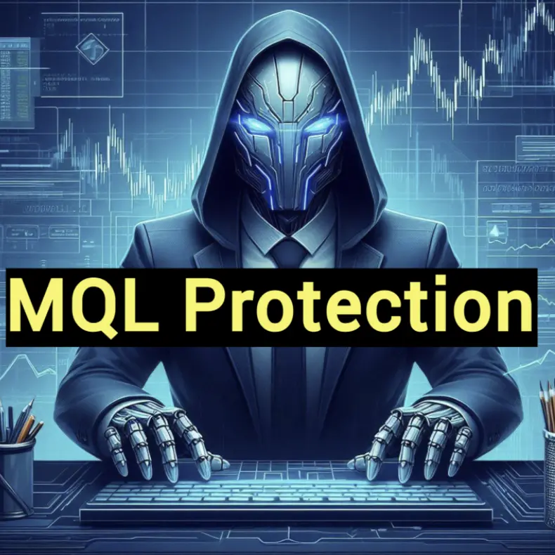

Offline Website CreatorMQL Protection Service: Overcoming the Limitations of MQL5 Marketplace and FXPIP Server-Client Security Solutions
The rise of automated trading systems has transformed the trading landscape, with platforms like MQL5.com offering a wide range of trading robots and indicators. These tools promise traders automated solutions for executing trades, analyzing market trends, and generating signals. However, as the demand for such tools has grown, a significant issue has surfaced— the risk of these products being decompiled and used without authorization.
MQL5.com has become a central hub for buying and selling trading robots and indicators, yet recent developments have exposed critical weaknesses in its security mechanisms. Despite claims of strong protection features, it is increasingly clear that many products available on MQL5.com are vulnerable to decompilation and illegal use.
The MQL5 platform's cloud protection system has proven ineffective in preventing the theft and unauthorized distribution of trading algorithms and strategies. This vulnerability exposes developers and sellers to intellectual property theft, diminishing their potential profits and jeopardizing the overall integrity of the automated trading ecosystem.
To address these challenges, a groundbreaking solution has emerged in the form of FXPIP.ONE’s secure protocol (MQL Protection Services) for transmitting trading logic and signals from server to client within the MT4 and MT5 terminals. Understanding the pressing need for better protection, FXPIP.ONE has developed a system that provides enhanced security for trading algorithms.

The core innovation behind FXPIP.ONE lies in its server-client model, where essential parts of the trading logic are stored on FXPIP.ONE’s secure server, and only encrypted data is transmitted to the client-side robot. This approach effectively prevents decompilation, as the critical logic remains inaccessible within decompiled files. As a result, any attempt by malicious actors to exploit or resell hacked products is futile without proper licensing and server authorization.
By utilizing cutting-edge encryption and a secure client-server architecture, FXPIP.ONE has created an environment where developers can deploy their trading solutions with confidence, knowing that their intellectual property is protected from unauthorized replication or misuse. This protection not only secures developers' work but also helps establish trust and credibility among traders who rely on automated trading systems.
In summary, while the MQL5 marketplace suffers from significant security vulnerabilities, FXPIP.ONE’s secure protocol offers a transformative solution that sets a new standard for safeguarding trading algorithms. With a focus on security and innovation, FXPIP.ONE has revolutionized the protection of automated trading tools, enabling developers to thrive in a secure environment free from exploitation.
Advantages of FXPIP.ONE’s MQL Protection Services
- Critical logic (such as mathematical calculations and signals) is stored on FXPIP.ONE's server in C++.
- Trading logic is transmitted to the client’s MetaTrader EA via an encrypted HTTPS protocol, ensuring secure data exchange (similar to the MetaTrader bridge).
- The solution does not rely on DLLs, which are vulnerable to cracking.
- Strategy Tester functions, although slower, remain protected by the same protocol.
- Decompiled EAs will not be able to execute trades without the server’s logic and correct licensing from the FXPIP.ONE server.
- IP addresses that attempt to access server logic with incorrect parameters will be permanently blocked, preventing further support and updates.
- A licensing tool is integrated into MetaTrader, allowing users to easily add licenses with just a click.
- All products protected by FXPIP.ONE’s protocol will be featured on our Protected MQL Market for greater visibility and recognition.
- By introducing this robust security framework, FXPIP.ONE ensures that automated trading systems are shielded from unauthorized access, providing developers with the tools they need to protect their intellectual property while empowering traders with secure and reliable trading solutions.
Offline Website Creator